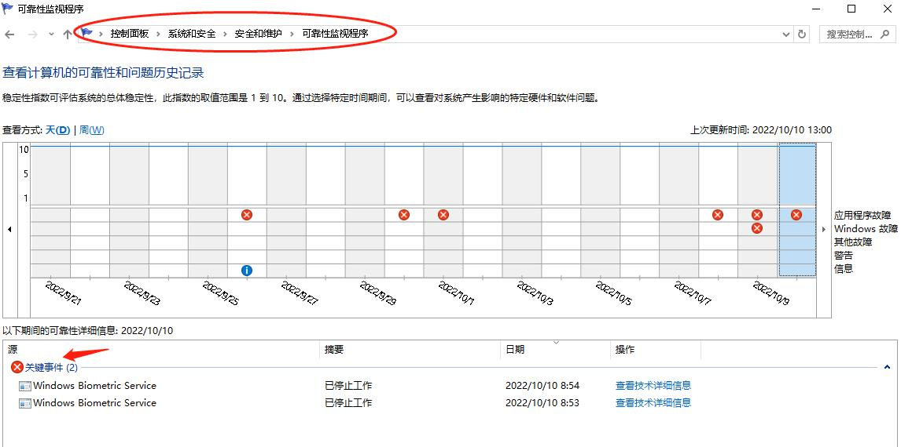
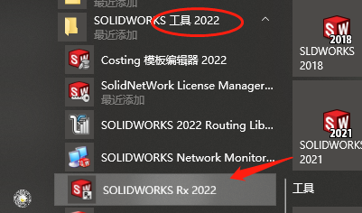
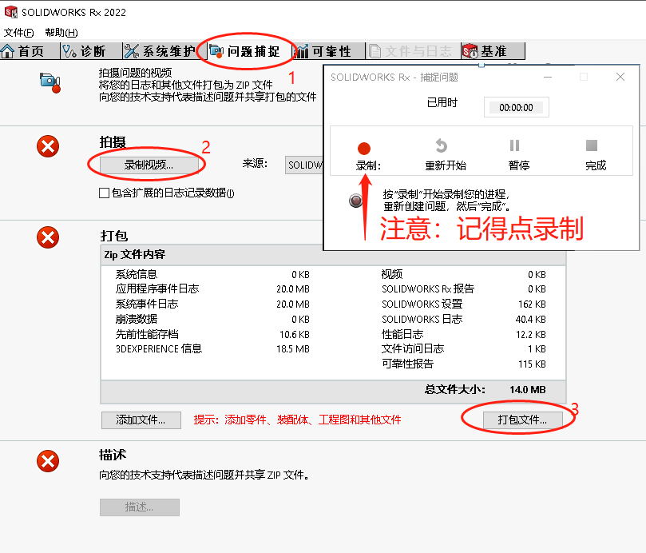

性能或崩溃问题一般处理方法
SOLIDWORKS 崩溃的一般处理方法流程：一般崩溃的问题来源有：【特定文件】【特定电脑】
graph LR 异常问题检查-->1其他电脑测试--正常-->2检查电脑环境-->加密/C盘权限/等 1其他电脑测试--异常-->检查其他SW文件--正常-->特定文件问题 检查其他SW文件--异常-->3检查SW问题
方法1：其他电脑测试
检查电脑环境或 SW 问题：看其他同事是否能打开该问题零件：
a. 能，则按第 3 点检查 SW 问题操作；
b. 不能，则可能这个文件的确有问题；建议看看能不能把文件发我们检查；
方法2：检查电脑环境
在【控制面板】-【系统和安全】-【安全和维护】-【可靠性监视程序】位置看下方关键事件关于 SW 的问题提示。 按照提示”查看技术详细信息”，看是否与某些组件或程序相关；从而进行下一步排除；
方法3：检查 SW 问题
在【开始/菜单】-【SOLIDWORKS 工具 2022】-【SOLIDWORKS RX】打开RX工具。

1、在Rx程序的”问题捕捉”项（下图 2-标记 1），
2、选开始录制视频；按提示点击录制。录制内容：打开问题零件，复现操作崩溃的情况，等待一会后，使 SW 程序卡退
3、打包 RX 文件获得一份”压缩包”，发我们检查。（下图 2-标记 3）
其他
还可能是其他原因或建议：
1、如果是单个用户电脑问题，可以尝试修复软件安装或重置注册表等操作。注册表操作建议是由熟悉操作的IT同事操作。
2、你还可以从崩溃界面里获得“审阅报告内容”，将其发给官方支持获得帮助。如果你来不及点击保存，可在如下位置找到日志文件。
1 | C:\Users\【用户名】\AppData\Local\SolidWorks\CXPA |